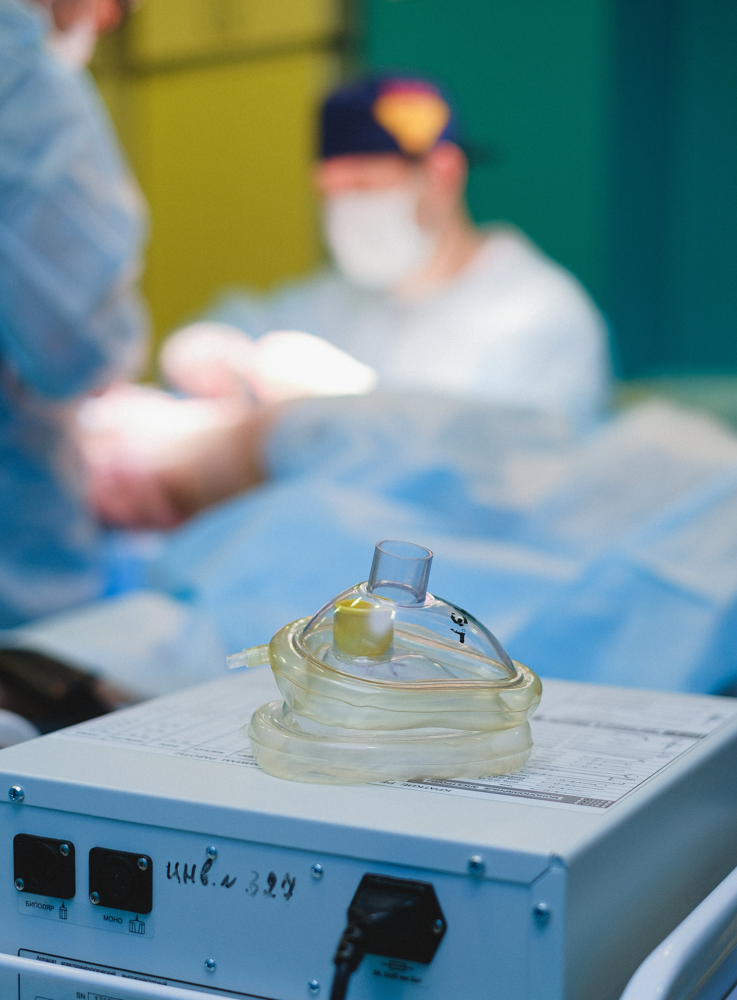

Welcome to Anaesthesia Focus
The author is an NCHD from Ireland and an aspiring Consultant Anaesthetist.
This website/blog is intended as an educational resource for those preparing for the Membership exams of the College of Anaesthesiologists of Ireland.
The curriculum pages will be populated during the author's own preparation for these exams.
You will notice there are still many pages under construction. Sorry!
It is hoped that (eventually) this will be a popular resource for those sharing the journey to MCAI.
[Disclaimer:
Many, many cups of coffee have been harmed in the creation of this site...]